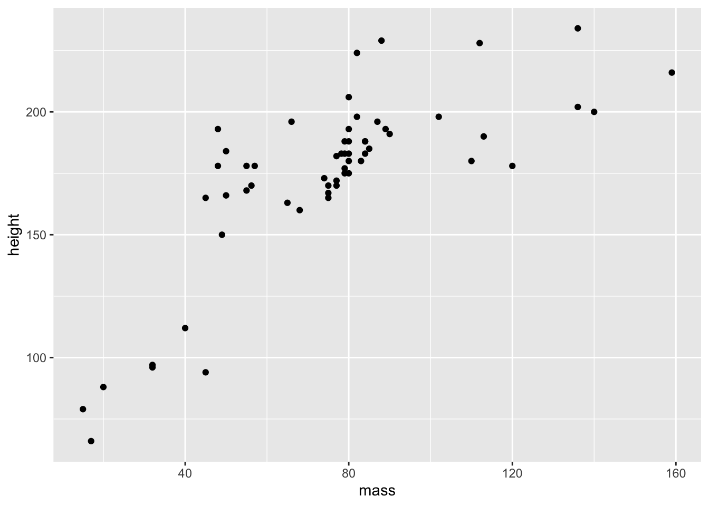

Working with R Markdown
James Van Slyke
R Markdown
Markdown is a simple formatting syntax for authoring HTML, PDF, and MS Word documents. For more details on using R Markdown see http://rmarkdown.rstudio.com or a nice slide presentation of what R Markdown can do is here.
When you click the Knit button a document will be generated that includes both content as well as the output of any embedded R code chunks within the document.
Here is the code to create a code chunk. Three left quotes or accents followed by braces with an r and then closing 3 accents.
If you click the green arrow on the right, it will run the code chunk for you and you can check it to make sure it’s right.

Code Chunk
So the output will look like this:
summary(cars)## speed dist
## Min. : 4.0 Min. : 2.00
## 1st Qu.:12.0 1st Qu.: 26.00
## Median :15.0 Median : 36.00
## Mean :15.4 Mean : 42.98
## 3rd Qu.:19.0 3rd Qu.: 56.00
## Max. :25.0 Max. :120.00Including Plots
You can also embed plots, for example:

Note that the echo = FALSE parameter was added to the
code chunk to prevent printing of the R code that generated the plot.
Most of the time we’ll have this set to echo=TRUE so we can
see your code.
How to set up an assignment
1. Write your YAML file
This is just the title of the assignment and your name, date, and the output, which will be a word document. This is always at the top of any R Markdown document.

YAML front matter
2. Add the r setup file
The r setup file lets you add any libraries or datasets you may need for the file. For example, you’ll need to usually add the tidyverse library for most of the assignments.
You’ll also need to add any datasets you are working with that you need to import. For example, to add SPSS files like the “Album Sales” Dataset you’ll need to add the “haven library” and then include the code to import the file.
Or if you import a .csv file, you’ll need to include the code for that as well.
If you’re not sure of where the file is, you can always import the file first and the copy the code from your console. Typically this is not included (include = FALSE), but sometimes we need to see how you set things up.

r setup file
3. Add questions from the assignment.
For each question you’ll want to copy and paste the question from your homework into R Markdown. For example, from your quiz.
- Use the “Star Wars” data from the tidy verse, use the “pipe” feature to filter the dataset to mass below 250. With the new dataset, create a scatterplot of mass and height.
4. Answer the question
R Markdown allows you to answer the question using both the code and output. So I’ll start with a descriptive sentence or annotation about what I’m doing and then show the code and the output.
Filter dataset to mass below 250
Smaller_StarWars <- starwars %>%
filter(starwars$mass < 250)
Smaller_StarWars## # A tibble: 58 × 14
## name height mass hair_color skin_color eye_color birth_year
## <chr> <int> <dbl> <chr> <chr> <chr> <dbl>
## 1 Luke Sky… 172 77 blond fair blue 19
## 2 C-3PO 167 75 <NA> gold yellow 112
## 3 R2-D2 96 32 <NA> white, bl… red 33
## 4 Darth Va… 202 136 none white yellow 41.9
## 5 Leia Org… 150 49 brown light brown 19
## 6 Owen Lars 178 120 brown, gr… light blue 52
## 7 Beru Whi… 165 75 brown light blue 47
## 8 R5-D4 97 32 <NA> white, red red NA
## 9 Biggs Da… 183 84 black light brown 24
## 10 Obi-Wan … 182 77 auburn, w… fair blue-gray 57
## # … with 48 more rows, and 7 more variables: sex <chr>,
## # gender <chr>, homeworld <chr>, species <chr>, films <list>,
## # vehicles <list>, starships <list>Create a scatterplot of mass and height
ggplot(data = Smaller_StarWars) +
geom_point(mapping = aes(x = mass,
y = height))
5 Knit your document
After your done with your document and want to turn it in, you’ll click the knit button and knit it as a word document.
The document will be saved in your working directory. The working
directory is the file where all your current files are being saved. It
should be listed in your console or you can type the command
getwd() to find it as well.
Here is a R Markdown template file to get you started: